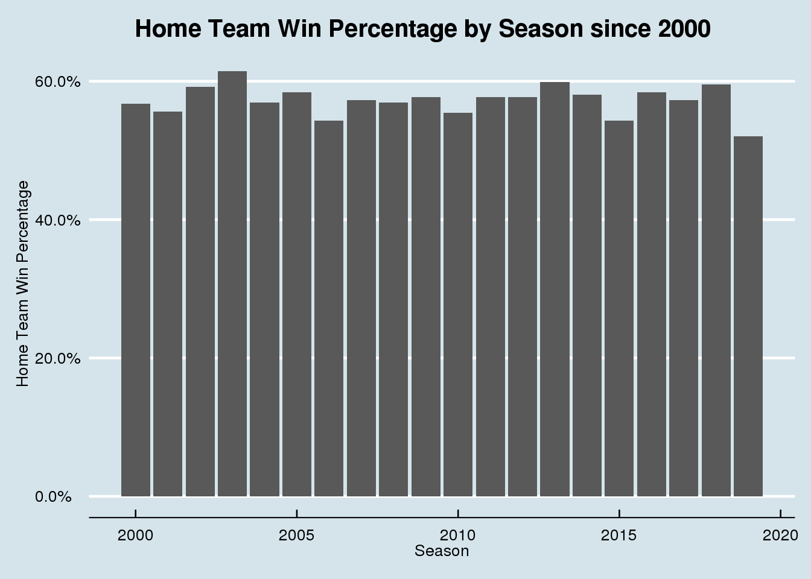
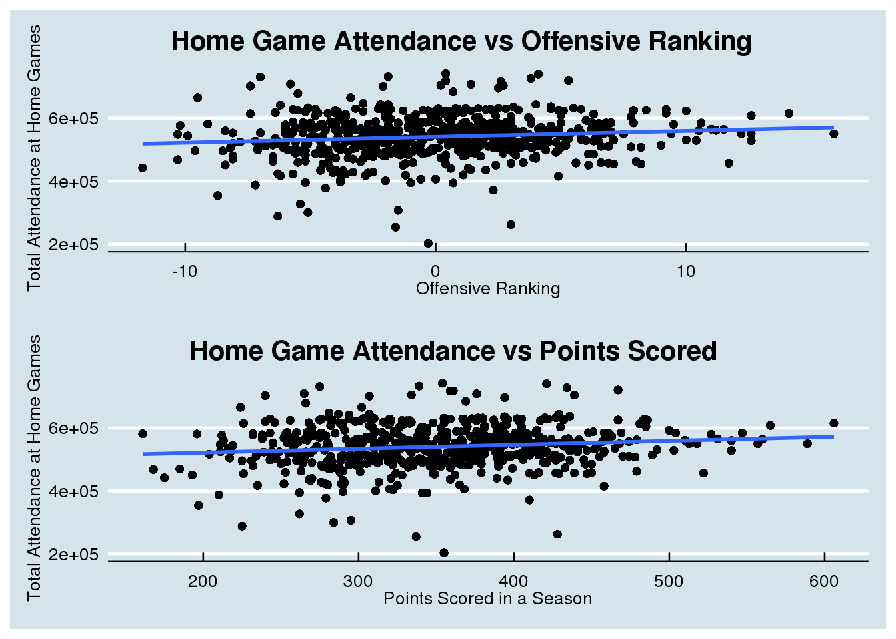

NFL Attendance
For this project, I will be examining the NFL attendance data from the attendance.csv file on the Tidy
Tuesday Website. The data consists of 10,846 observations and 8 variables. The dataset shows the the total
attendance and weekly attendance for every NFL team dating back to the 2000 NFL season.
Another dataset that I will be using to explore NFL attendence is the standings.csv file from the Tidy
Tuesday website. The data consists of 638 observations and 15 variables. Some of the variables in this
dataset show how well each NFL team preformed in each season since 2000, these variables include the
number of wins and losses as well as whether each team made the playoffs or won the Superbowl in the
sb_winner variable. This dataset also represents how good each team preformed on offense and defense
by having points_for and points_against variables as well as offense_ranking and defense_ranking.
This data will help me see if there is a correlation between team success and attendance.
Lastly, I will be using the games.csv file from the Tidy Tuesday website. The data consists of 5,324
observations and 19 variables. The data shows the outcomes of every NFL game dating back to the 2000
NFL season. The home_team , away_team, and winner variables will be useful to see if there is any sort
of home field advantage in the NFL. The day, date, and time variables will be useful to see if NFL games
played on different times and dates have different amounts of attendance.
Question 1
Do playoff teams have more attendance at their home games than non-playoff teams? If so, does the Superbowl winner usually lead the league in attendance? To test this, I first joined the attendance dataset and the standings dataset to compare the attendance data and whether or not each team made the playoffs.
dat <- attendance %>%
left_join(standings, by = c("team", "team_name", "year"))Next, I made some graphics to better visualize if there was any correlation between higher home field attendance and team success. The first graphic I made plots the total attendance at home games for that season against the number wins that team had and whether or not they made the playoffs.
ggplot(dat, aes(x = wins, y = home)) +
geom_point(aes(color = playoffs)) +
geom_smooth(method = "lm") +
labs(x = "Wins", y = "Total Attendence at Home Games") +
ggtitle("Home Game Attendence vs Wins and Playoff Births") +
scale_color_manual(values=c("#999999", "#E69F00")) +
theme_economist() +
theme(plot.title = element_text(hjust = 0.35)) 
Next, I wanted to easily compare the difference in total attendance at home games between teams that made the playoffs and those that did not and between teams that won the Superbowl and those that did not. Therefore, I made 2 boxplots, one that plots total home team attendance against whether each team made the playoffs, and another that plots total home team attendance against whether each team won the Superbowl.
p1 <- ggplot(dat, aes(x = playoffs, y = home)) +
geom_boxplot() +
labs(x = "Playoff Birth", y = "Total Attendence at Home Games") +
theme_economist() +
theme(plot.title = element_text(hjust = 0.35))
p2 <- ggplot(dat, aes(x = sb_winner, y = home)) +
geom_boxplot() +
labs(x = "Superbowl Winner", y = "Total Attendence at Home Games") +
theme_economist() +
theme(plot.title = element_text(hjust = 0.35))
patchwork <- p1 + p2
patchwork +
plot_annotation(title = "Home Game Attendence vs Playoff Births & Superbowl Winners") 
Lastly, I wanted to see which teams had the highest average home attendance since 2000 and whether the teams with the highest attendance where the most successful. To test this, I made a a bar graph that plots the average home attendance since 2000 for each NFL team, and I ordered the teams on the x-axis by the number of playoff appearances that they had since 2000 to see if there was any trend.
dat2 <- dat %>%
group_by(team_name) %>%
summarize(avr_home = mean(home))
dat3 <- standings %>%
count(playoffs, team_name) %>%
filter(playoffs == "Playoffs") %>%
left_join(dat2, by = "team_name")
ggplot(dat3, aes(x = reorder(team_name, -n), y = avr_home)) +
geom_col() +
labs(x = "Teams ordered by Number of Playoff Appearances since 2000", y = "Home Attendences") +
ggtitle("Average Home Attendence since 2000 by NFL Team") +
theme_economist() +
theme(axis.text.x = element_text(angle = 90, hjust = 1, vjust = 0.5)) +
theme(plot.title = element_text(size = 14, hjust = 0.35)) There is a clear positive correlation between teams that went to the playoffs and higher attendance at home games. However, there were many teams with high attendance that missed the playoffs and teams with low attendance that did make the playoffs. Also, when looking at Superbowl Winners, there is almost no difference in attendance between teams that did win the Superbowl and those who did not. Lastly, the average home attendance graph shows that there is no correlation between teams with high average attendance and more playoff appearances. This leads me to believe that the effect that high attendance has on the success of NFL teams is very small.
There is a clear positive correlation between teams that went to the playoffs and higher attendance at home games. However, there were many teams with high attendance that missed the playoffs and teams with low attendance that did make the playoffs. Also, when looking at Superbowl Winners, there is almost no difference in attendance between teams that did win the Superbowl and those who did not. Lastly, the average home attendance graph shows that there is no correlation between teams with high average attendance and more playoff appearances. This leads me to believe that the effect that high attendance has on the success of NFL teams is very small.
Question 2
Is there any home field advantage in the NFL? To test this, I used the games dataset and I used mutate to make a new a variable that gets set to TRUE if the home team won each game. I then grouped by season so I could use summarize to show the win percenatge by home team in each NFL season since 2000.
home <- games %>%
mutate(home_win = home_team == winner) %>%
group_by(year) %>%
summarize(home_win_pct = sum(home_win)/ n())Next, I visualized the data by creating a bar graph that shows the Home Team Win Percentage in the NFL in each season since 2000.
ggplot(home, aes(x = year, y = home_win_pct)) +
geom_col() +
scale_y_continuous(labels = scales::percent) +
labs(x = "Season", y = "Home Team Win Percentage") +
ggtitle("Home Team Win Percentage by Season since 2000") +
theme_economist() +
theme(plot.title = element_text(hjust = 0.35))
I also wanted to see if home field advantage resulted in home teams scoring more points. To find this I used the games dataset and summarized it to find the average points scored by winning home and away teams as well as losing home and away teams.
dat4 <- games %>%
filter(home_team == winner) %>%
group_by(year) %>%
summarize(avr_home_pts_win = mean(pts_win), avr_away_pts_loss = mean(pts_loss))
dat5 <- games %>%
filter(away_team == winner) %>%
group_by(year) %>%
summarize(avr_home_pts_loss = mean(pts_loss), avr_away_pts_win = mean(pts_win))
dat4 %>%
left_join(dat5, by = "year") %>%
summarize(avr_home_pts_win = mean(avr_home_pts_win), avr_away_pts_win = mean(avr_away_pts_win), avr_home_pts_loss = mean(avr_home_pts_loss), avr_away_pts_loss = mean(avr_away_pts_loss))## # A tibble: 1 x 4
## avr_home_pts_win avr_away_pts_win avr_home_pts_loss avr_away_pts_loss
## <dbl> <dbl> <dbl> <dbl>
## 1 28.1 27.3 16.5 15.8The graph of Home Team win percentage by season shows that in every season since 2000 home teams havw won at least 50% of their games, even reaching a peak of over 60% in the 2003 NFL season. This reveals that there is some amount of home field advantage in the NFL. Furthermore, the table with average points scored reveals that home teams score more in both wins and losses, which furthers the claim that there is home field advantage in the NFL.
Question 3
Do teams with a good offense attract more attendence? If not, good defense, or does it not matter? To test this, I joined the attendance dataset and the standings dataset to be able to compare attendance data with offensive and defensive data for each team.
dat <- attendance %>%
left_join(standings, by = c("team", "team_name", "year"))First, I wanted to see if good offenses attracted more home attendance, so I graphed offensive ranking and points scored in a season against total attendance at home games in that season.
f1 <- ggplot(dat, aes(x = offensive_ranking, y = home)) +
geom_point() +
geom_smooth(method = "lm") +
labs(x = "Offensive Ranking", y = "Total Attendance at Home Games") +
ggtitle("Home Game Attendance vs Offensive Ranking") +
theme_economist() +
theme(plot.title = element_text(hjust = 0.35))
f2 <- ggplot(dat, aes(x = points_for, y = home)) +
geom_point() +
geom_smooth(method = "lm") +
labs(x = "Points Scored in a Season", y = "Total Attendance at Home Games") +
ggtitle("Home Game Attendance vs Points Scored") +
theme_economist() +
theme(plot.title = element_text(hjust = 0.35))
f1 / f2
Next, I wanted to see if I would see a similar trend with good defensive teams, so I graphed defensive ranking and points allowed in a season against total attendance at home games in that season.
f3 <- ggplot(dat, aes(x = defensive_ranking, y = home)) +
geom_point() +
geom_smooth(method = "lm") +
labs(x = "Defensive Ranking", y = "Total Attendance at Home Games") +
ggtitle("Home Game Attendance vs Defensive Ranking") +
theme_economist() +
theme(plot.title = element_text(hjust = 0.35))
f4 <- ggplot(dat, aes(x = points_against, y = home)) +
geom_point() +
geom_smooth(method = "lm") +
labs(x = "Points Given Up in a Season", y = "Total Attendance at Home Games") +
ggtitle("Home Game Attendance vs Points Given Up") +
theme_economist() +
theme(plot.title = element_text(hjust = 0.35))
f3 / f4
The offensive graphs show that teams with good offenses saw slightly more attendance on average than teams with bad offenses. Furthermore, the defensive graphs reveal that teams with good defenses saw slightly more attendance on average. Thus, both teams with good offenses and those with good defenses draw slightly larger crowds to NFL games.
Conclusions:
TBD